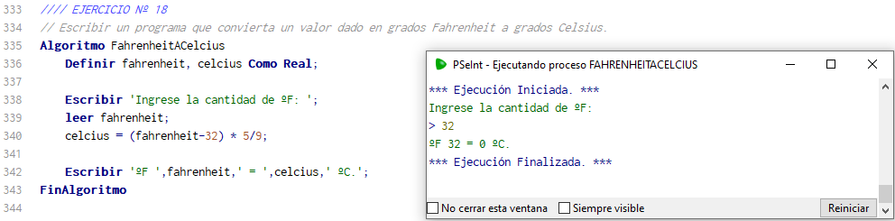

Prácticas UTN - Ingreso 2023
- Fundamentos Básicos de la Programación
- Variables - Estructuras Secuenciales
- Estructuras Condicionales
- Ciclos - Repetitivos
- Subprogramas
- Arreglos
- Recursividad
- Simulación de EXAMEN de Programación
Fundamentos de la Programación
1. Crea un programa que calcule el área y el perímetro de una circunferencia.
Conocido el número en matemática PI π, pedir al usuario que ingrese el valor del radio de una circunferencia y calcular y mostrar por pantalla el área y perímetro. Recuerde que para calcular el área y el perímetro se utilizan las siguientes fórmulas: area = PI * radio2 perimetro = 2 * PI * radio

2. Precio promedio
Escribir un programa que calcule el precio promedio de un producto. El precio promedio se debe calcular a partir del precio del mismo producto en tres establecimientos distintos.
3. Conversor de distancia
Escribir un programa que a partir de una conocida cantidad de metros que el usuario ingresa a través del teclado se debe obtener su equivalente en centímetros, en milímetros y en pulgadas.

4. Conversor kilómetros.
Escribir un programa que calcule cuántos litros de combustible consumió un automóvil. El usuario ingresará una cantidad de litros de combustible cargados en la estación y una cantidad de kilómetros recorridos, después, el programa calculará el consumo (km/lt) y se lo mostrará al usuario.
5. Intercambio de valores
Escribir un programa que permita al usuario ingresar el valor de dos variables numéricas de tipo entero. Posteriormente, el programa debe intercambiar los valores de ambas variables y mostrar el resultado final por pantalla. Por ejemplo, si el usuario ingresa los valores num1 = 9 y num2 = 3, la salida a del programa deberá mostrar: num1 = 3 y num2 = 9 Ayuda: Para intercambiar los valores de dos variables se debe utilizar una variable auxiliar..

6. Porcentaje niñas y niños
Escribir un programa para un colegio que desea saber qué porcentaje de niños y qué porcentaje de niñas hay en el curso actual. Diseñar un algoritmo para este propósito. Recuerda que para calcular el porcentaje puedes hacer una regla de 3 simple. El programa debe solicitar al usuario que ingrese la cantidad total de niños, y la cantidad total de niñas que hay en el curso. .

7. Área y Perímetros de un rectángulo.
Escribir un programa que solicite al usuario que ingrese la base y altura de un rectángulo, y calcular y mostrar por pantalla el área y perímetro del mismo area = base * altura perimetro = 2 * altura + 2 * base.

8. Volúmen de un cilíndro
Escribir un programa que calcule el volumen de un cilindro. Para ello se deberá solicitar al usuario que ingrese el radio y la altura. Mostrar el resultado por pantalla. volumen = π * radio2 * altura .
9. Dias, horas, minutos, segundos.
Escribir un programa que a partir de una conocida cantidad de días que el usuario ingresa a través del teclado, escriba un programa para convertir los días en horas, en minutos y en segundos. Por ejemplo 1 día = 24 horas = 1440 minutos = 86400 segundos.

10. Calcular inflación
Escribir un programa que solicite al usuario que ingrese el precio de un producto al inicio del año, y el precio del mismo producto al finalizar el año. El programa debe calcular cuál fue el porcentaje de aumento que tuvo ese producto en el año y mostrarlo por pantalla. .
11. Saludo personalizado
Escribir un programa que pregunte al usuario su nombre, y luego lo salude.
12. Conversor Pesos, Dólar, Euro.
Calcular el cambio de monedas en dólares y euros al ingresar cierta cantidad de dinero en pesos.
13. Salario Neto
Hacer un programa que calcule el salario de un empleado, si se descuenta el 20% de su salario bruto.
14. Conversor de segundos
Crea un programa que permita ingresar por teclado un número total de segundos y que luego pueda mostrar la cantidad de horas, minutos y segundos que existen en el valor ingresado.
15. Propiedades Rombo
Crea un programa que permita mostrar el área y perímetro de un rombo
16. Propiedades de un hexágono
Crea un programa que permita mostrar el área y perímetro de un hexágono.
17. Propiedades de un paralelogramo
Crea un programa que permita mostrar el área y perímetro de un paralelogramo.
17. Fahrenheit / Celsius
Crea un programa que convierta un valor dado en grados Fahrenheit a grados Celsius.
19. Sueldo + Comisiones
Crea un programa que permita mostrar el sueldo más comisiones de un vendedor. Éste recibe un sueldo base más un 10% extra por comisión de sus ventas, el vendedor desea saber cuánto dinero obtendrá por concepto de comisiones por las tres ventas que realiza en el mes y el total que recibirá en el mes tomando en cuenta su sueldo base y comisiones.
20. Descuento en tienda
Una tienda ofrece un descuento del 15% sobre el total de la compra y un cliente desea saber cuánto deberá pagar finalmente por su compra.
21. Calificación final
Un alumno desea saber cuál será su calificación final en la materia de Algoritmos.
Dicha calificación se compone de los siguientes porcentajes:
a. 55% del promedio de sus tres calificaciones parciales.
b. 30% de la calificación del examen final.
c. 15% de la calificación de un trabajo final
21.
Lorem, ipsum.
21.
Lorem, ipsum.
21.
Lorem, ipsum.
21.
Lorem, ipsum.
21.
Lorem, ipsum.
21.
Lorem, ipsum.
21.
Lorem, ipsum.
21.
Lorem, ipsum.
21.
Lorem, ipsum.